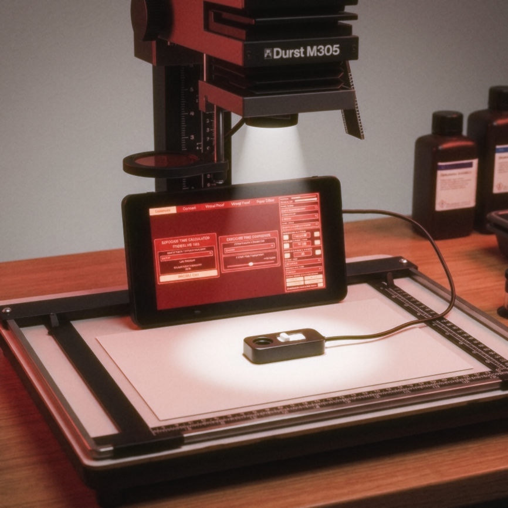
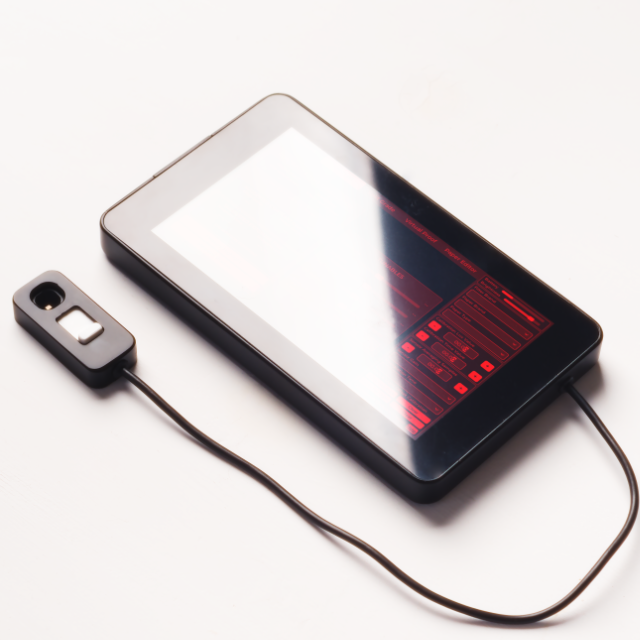
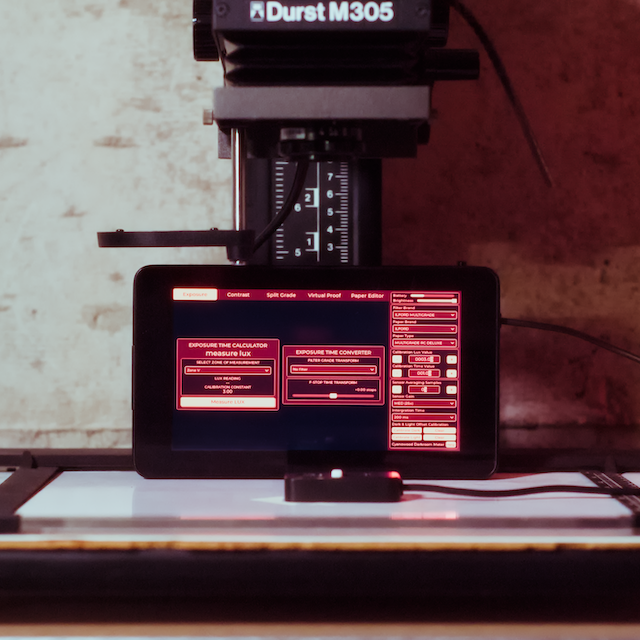
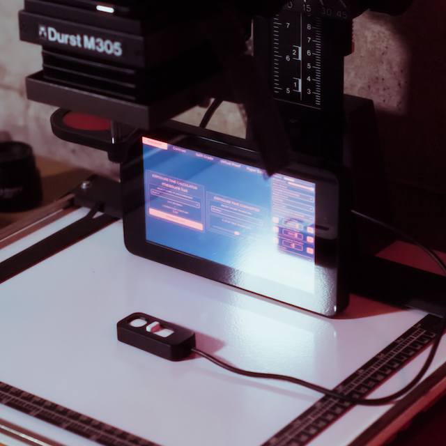
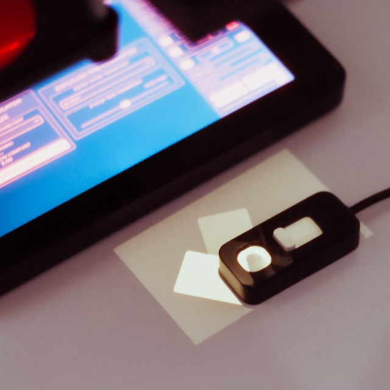
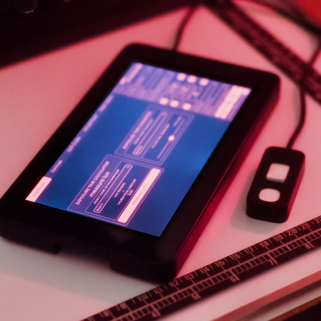
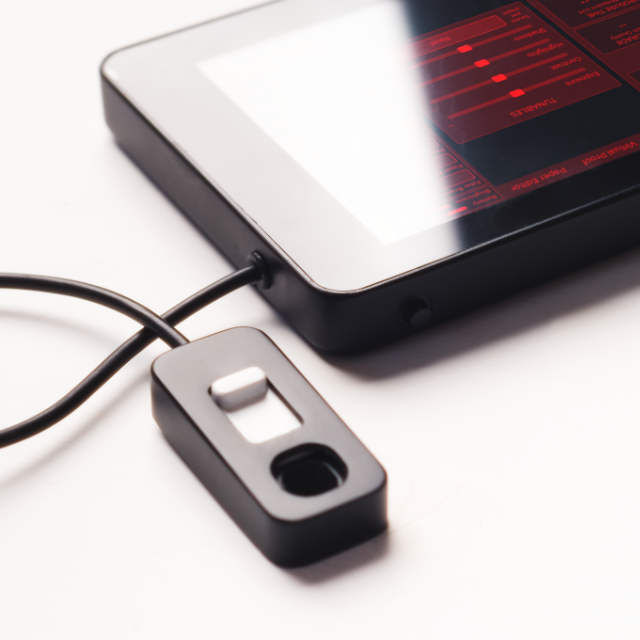

A handheld digital darkroom exposure meter, enlarger light meter, and darkroom print analyzer for the analog darkroom. One lux reading at the easel converts to precise exposure time, recommended contrast grade, and split-grade timing — calibrated to your own paper, enlarger, and filters. Reduce darkroom test strips by 70–90% from your first session.
€160,00 excl. VAT

Every tab pulls from the same lux reading — the darkroom exposure meter just asks a different question of it. From f-stop printing times to split-grade recommendations.
Every unit is assembled, soldered, and calibrated by hand — no two are exactly alike.






Six capabilities you won't find in a test strip — each one saves paper and time from the first session.
Long exposures under-respond on photographic paper — this is the photographic paper reciprocity failure effect. The meter applies a Schwarzschild-model correction automatically — milder for resin-coated papers, stronger for fibre-base — so your 45‑second exposure doesn't come out thin. No need to memorize the photographic paper reciprocity failure formula; the meter handles it.
Calibrate one paper properly with a test strip. The meter then estimates calibrations for all 21 other papers using their ISO P speed ratings — turning a per-paper chore into a five‑minute bulk setup. Built-in Ilford Multigrade paper calibration database plus FOMA, fixed-grade, and custom paper support.
All 22 papers work with all 6 filter brands — Ilford, FOMA, AGFA, Kodak, Durst, Meopta. Use Ilford under‑lens filters with FOMA paper, or a Durst colour head with Ilford paper. The cross‑compatibility data is built in.
LCD backlight contaminates lux readings in a darkroom. Every time you press Measure, the screen dims to 10% before the sensor is read, then restores — transparently, on every tab, every time.
In Virtual Proof auto‑scan mode, the meter waits for each cell's reading to stabilize before advancing. Configurable tolerance, minimum stable samples, and a max‑wait timeout — so the scan never stalls on a dim cell.
You're not locked into metering only midtones. Point the sensor at a shadow and set the zone to III — the meter scales to its Zone V equivalent automatically. Point at a highlight, set to VII. The calibration stays valid no matter what tone you measure, with the correct multiplier for every step from Zone 0 through X.
The meter needs to learn your paper's speed before it can give you a time. It's a single test print — do it once per emulsion, and every reading after that is instant.
Pick the paper. Choose its brand and type in the meter.
Set up the enlarger exactly as you'll print — lens stop, head height, sharp focus.
Pull every contrast filter out of the light path. This step matters.
Load a flat, mid-toned negative — a gray card or plain wall works well — and measure the lux at the easel.
Expose a test strip in steps and develop it normally.
Find the segment whose midtone looks exactly right, and note its exposure time.
Enter that lux reading and time into the meter's calibration field.
Measure again — the suggested time should now match what you just proved on paper.
Quick answers about darkroom exposure metering, calibration, paper compatibility, and how to reduce darkroom test strips with precision measurement.
Every emulsion has a different speed. The meter stores one calibration constant per paper — do it once with a test strip (about 15 minutes), and every reading after that is instant. Already calibrated one paper? Use the cross‑paper estimation tool to populate the other 21 papers automatically from their ISO P speed ratios. See §7 and §9.4 in the manual for the full procedure.
The device runs from a rechargeable LiPo battery and charges over USB‑C — even while you're printing, so you can keep it plugged in during long sessions. When the battery reaches 10%, the meter automatically enters dormant sleep to protect the cell from over‑discharge damage. A full charge lasts through several darkroom sessions.
Yes. The built‑in database includes fixed‑grade papers such as FOMA FOMASPEED Normal. The Exposure and Contrast tabs work as usual — the Contrast tab shows "Fixed grade" and still calculates a midpoint exposure time. Split Grade is not applicable for fixed‑grade papers; use the Contrast tab instead. Filter factors and ISO R are locked (they're fixed at manufacture), but ISO P remains adjustable in the Filter Editor.
That's the backlight auto‑dimming feature. LCD backlight can contaminate light‑sensor readings in a darkroom, so the screen automatically dims to 10% brightness before each sensor read, then restores to your chosen brightness afterward. This happens on every tab, every time you press Measure — it's always active to guarantee accurate lux readings. If the flicker is distracting during long sample sequences, reduce the sample count or integration time in Settings.
They almost certainly will. Manufacturer datasheet factors are lab averages — your bulb type, lamp age, lens coatings, and reflector condition can shift them 10–30%. The Filter Editor lets you enter your own measured exposure factors and ISO R values per grade. The manual covers three measurement methods: step wedge (most accurate), grey card visual match (no special equipment), and densitometer. See §9 and §12 in the manual.
Yes. The ambient light sensor reads broadband visible light — it doesn't care about the spectrum, only the intensity at the easel. Variable‑contrast LED heads with narrow‑band blue/green output work fine. Cold‑light (fluorescent) heads also work. You may want to measure your own filter factors since LED and cold‑light attenuation characteristics differ from tungsten — the Filter Editor is built for exactly this.
About 15 minutes for your first paper calibration (one test strip, developed and evaluated). After that, the cross‑paper estimation tool populates the other 21 papers in under a minute by scaling from ISO P speed ratios. Optional sensor calibration (offset + light) takes about 5 minutes and only needs to be done once per device. Most users are printing within half an hour of unboxing.
By measuring lux directly at the easel, the meter calculates a precise exposure time before any paper is exposed. Instead of making 4–5 test strips per print, you take one measurement and get the correct time instantly — that's how to reduce darkroom test strips by 70–90%. The Virtual Proof tab goes further: it scans the entire projected image in a grid and renders a grayscale preview of the final print, so you see contrast and density distribution before committing a single sheet of paper. Most users save dozens of sheets per session.
Yes. For long exposures (above ~10 seconds), photographic paper becomes less sensitive — it needs more light than the linear formula predicts. This is the photographic paper reciprocity failure effect. The meter applies a Schwarzschild-model reciprocity failure formula automatically: milder correction for resin-coated papers, stronger for fibre-base papers. So your 45‑second exposure doesn't come out thin, and you never need to calculate the correction manually.
Yes, the meter is fully cross-brand compatible. All 22 papers work with all 9 filter brands — Ilford, FOMA, AGFA, Kodak, Durst, Meopta, Beseler, Omega/Chromega, and De Vere. Use Ilford under‑lens filters with FOMA paper, a Durst colour head with Ilford paper, or any combination. The cross‑compatibility data is built in and automatically resolves the correct ISO R values and filter factors for every paper‑filter pair. This is essential for the Ilford Multigrade paper calibration database and cross-brand workflows.
The meter unit (Waveshare RP2350 with touchscreen display) and a tethered ambient‑light sensor probe. The in‑app help center walks through setup screen by screen, and a comprehensive manual is available to download here. The device charges over any standard USB‑C cable.
Every darkroom exposure meter is assembled, soldered, and calibrated by hand — this isn't a production line. If you'd like a precision enlarger light meter for your own darkroom, or you've got a feature to suggest for the darkroom print analyzer, get in touch.
€160,00 excl. VAT
Email support@cyanowood.com